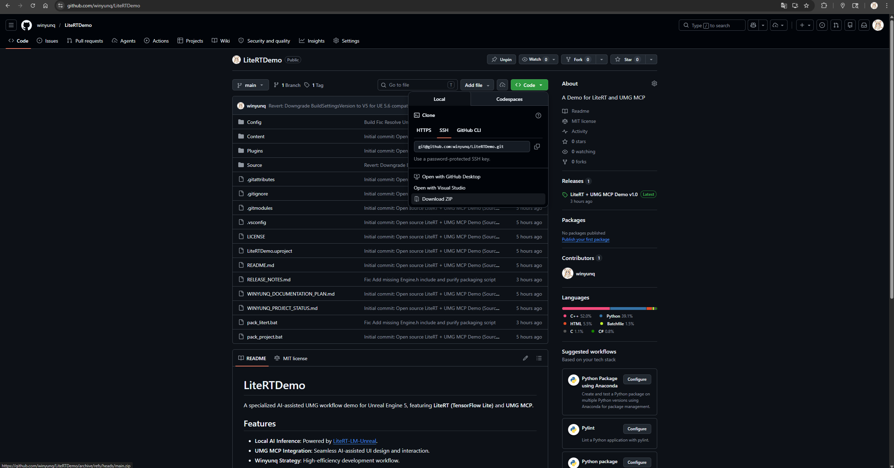
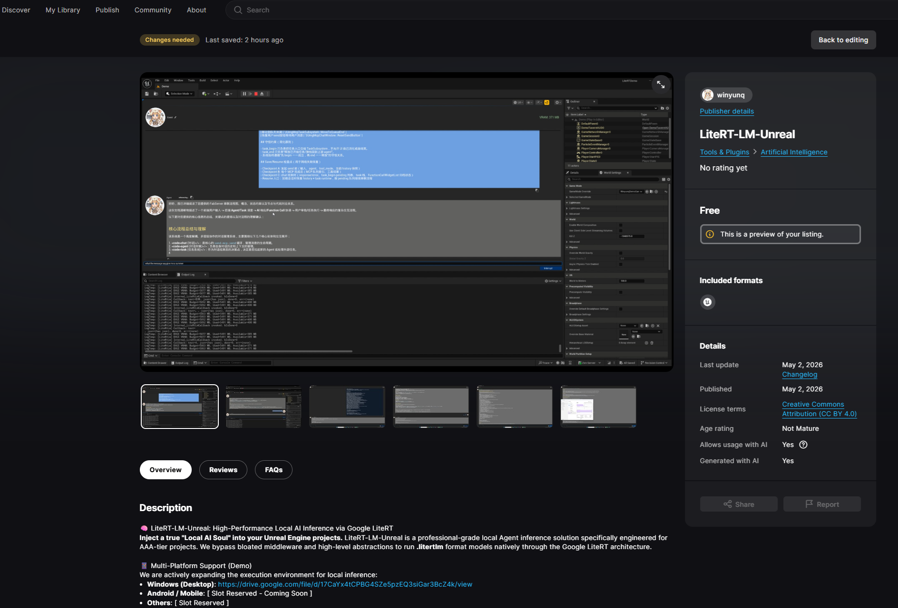
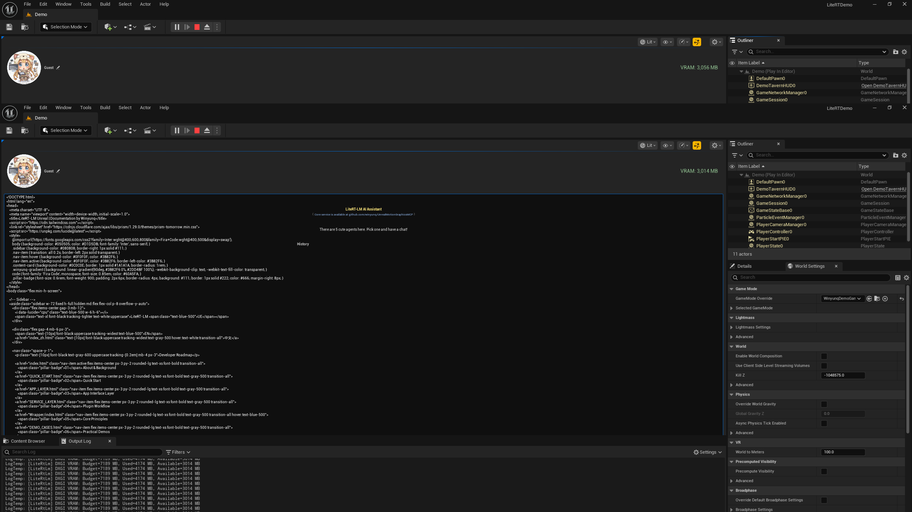
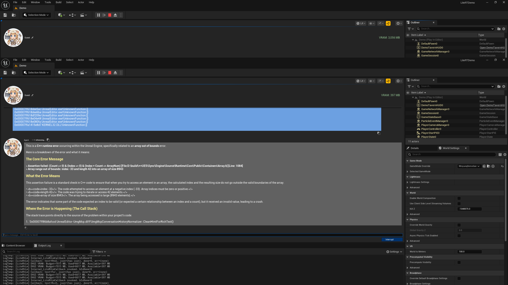

Step 3 / Run Demo Level
03
Open the Demo Map
The plugin comes with a complete demo level. Click Run, and you will see an interactive interface integrated with AI conversation capabilities.

Chapter 02 / Quick Start Guide
Setup Your Unreal Project
First, ensure you have a supported Unreal Engine version installed and place the LiteRT-LM plugin into your project directory.

Deploy from FAB or Marketplace
After acquiring the plugin from the Fab page, you can enable it directly in the editor. This is the first step to unlocking local LLM inference.

Acquire the Core Brain of AI
Visit Hugging Face to download the specified lightweight model file:
Get gemma-4-E2B-it-litert-lmPlacement Specification (Project Path)
After downloading, ensure the file is named gemma-4-E2B-it-litert-lm and place it in the Content folder of your Project Root:
[Your Project Dir]/Content/Models/gemma-4-E2B-it-litert-lm
IMPORTANT: Place the model in the Project Path, not the plugin path, for easier packaging. Ensure the project path contains no non-ASCII characters to avoid mmap failures.
Open the Demo Map
The plugin comes with a complete demo level. Click Run, and you will see an interactive interface integrated with AI conversation capabilities.
Real-time Text Interaction
Type a message in the dialogue box and press Enter. The plugin will automatically map your SessionKey to the KV Cache in VRAM.

Streaming Responses & Memory
The AI will begin returning results word by word. Thanks to our multi-session management, NPCs will remember your conversation context, achieving true intelligent interaction.
